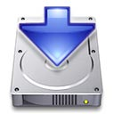

Past Projects
Persistence (March 2009)
Persistence was built to take advantage of all the latest Mac OS X Leopard features, and its backup engine is ahead of the competition thanks to its numerous innovative features.
Persistence was acquired by app4mac and is now Twin.
X-Tunes (October 2003)
 X-Tunes is a free utility to to control iTunes without bringing iTunes to the foreground, or having the iTunes window on screen.
X-Tunes is a free utility to to control iTunes without bringing iTunes to the foreground, or having the iTunes window on screen.Contrary to iTunes or other controllers, X-Tunes does not display a window permanently on screen, but only when you press a given key combination (Apple+Space by default). This window appears in front of all applications so you can click on its buttons while remaining in the current application. As soon as you release the key combination, the window disappears smoothly.
For those who wonder, here's why I think controlling iTunes through the dock is not efficient at all and something else was needed:
- you first need to find where's iTunes in the dock (not that fast if you have plenty of icons in your dock),
- you have to send your mouse to the very low bottom of the screen,
- the menu needs about half a second before appearing,
- for each operation you want to do, you need to select again and again items in the menu (skip tracks for example),
- you cannot set the volume. It's simply not practical.
PixelShox Studio Public Beta (June 2003)
Such animations are rendered in real-time on the computer's screen thanks to OpenGL and can be used either for personal enjoyment, or professionally in any project where interactive visuals are required: VJing, multimedia installations, presentations, concerts...
Completely hardware accelerated and using fully the latest Mac OS X technologies (OpenGL, CoreAudio, CoreMIDI, Cocoa...), this node-based 2D/3D video animation tool unleashes your creative inspiration with more than a 100 plug-ins (from basic mathematic operators to live video import), virtually unlimited number of compositions and layers, well-designed user-interface and great performances even on low-end machines!
PixelShox Studio is built on top of the PixelShox 3D Engine, a highly-flexible and extensible plug-in based OpenGL engine, designed to take advantage of the latest and upcoming technologies. In case you are missing a functionnality, you can even create your own plug-in(s) with the PixelShox SDK.
PixelShox 3D Engine (June 2003)
The PixelShox Engine has a complety modular design: it contains a set of more than 100 plug-ins that you connect together to build "Effects". Then you can have several effects on screen at the same time.
This engine is available for licensing and is designed to be multiplatform.
X-Change (January 2003)
X-Change automatically downloads the latest exchange rates from the European Central Bank.
If, like me, you often need to do currency conversions, you will likely find X-Change more practical than these conversion tools you find on some web pages.
Catalogue Alfred Latour (August 2002)
 Catalogue is a Cocoa program to browse and edit a family-built database of paintings by Alfred Latour (more than 1500 entries).
Catalogue is a Cocoa program to browse and edit a family-built database of paintings by Alfred Latour (more than 1500 entries).
This program is for the family private use only.
X-Charge (August 2002)
 X-Charge is a battery monitoring software for iBook and PowerBook owners. It displays an antialiased graph of the battery charge over time (up to 24 hours) and keep in a log file all battery related events.
X-Charge is a battery monitoring software for iBook and PowerBook owners. It displays an antialiased graph of the battery charge over time (up to 24 hours) and keep in a log file all battery related events.X-Charge is a very useful utility to analyse the state of your battery.
X-Charge also resuscitates the cool looking dock icon that displayed the current charge of the battery in MacOS X 10.0, which unfortunately was removed from further versions of the OS.
X-Installer (August 2002)
A basic installer for my products that require to be installed in special places.
X-Movie (August 2002)
Unfortunately, because of very poor support of QuickTime through Cocoa (interface bugs, very difficult to save files...), I've stopped its development.
In this 0.9 version, editing and full-screen are not functional.
X-Namer (August 2002)
Use it to add an extension, change the extension, suffix a number, replace part of the name... of hundreds of files with a simple click!
You can see the new names of the files in a list to make sure the result is what you expect, before renaming the files.
X-News (August 2002)
A never finished powerful news reporting tool. Contrary to other software that scan the web for the latest news but only display the news title and date, this one parses web pages and extracts the news content.
You can now read the news from your favorites web sites directly inside mail-like software. No more need for a web browser!
X-Locks (August 2002)
The X-Locks Database is fully encrypted with a Master Password to ensure its privacy (up to 448 bits encryption).
The Master Password can be stored inside the MacOS Keychain so that you don't need to type it each time you launch X-Locks.
X-Sat (August 2002)
You can configure X-Sat to download automatically a given satellite image each time you launch it.
If you often look at the satellite image of your country to guess the upcoming weather, you will love X-Sat!
X-Sat is also a valuable learning tool for children interested in world geography.
X-Saver (August 2002)
X-Saver is a screen saver module for the Screen Saver panel of the System Preferences application.
It displays a high-speed vortex tunnel: this thing is really "psychedelic"!
X-Saver is based on the OpenGL PixelShox 3D engine.
Pol Versioning System (August 2002)
 PolVersioning is a developer tool for Project Builder that automatically stores build information into a file inside the resulting package.
PolVersioning is a developer tool for Project Builder that automatically stores build information into a file inside the resulting package.The created file has the name "PolVersionInfo" and will be created in the resources folder of the package. Since it is stored as a .plist, you can extract the information easily with Cocoa methods.
The file contains the following information:
- build date,
- build number (incremented by 1 each time you make a build),
- the full name of the user who did the build,
- the product name.
Hold-Up (April 2002)
Like any other personal finance manager, you can manage several accounts, enter an unlimited number of transactions, create scheduled transactions, define categories, payment types...
BUT here's why this product is way better than other products:
- Contrary to others personal finance managers, Hold-Up has a nice and very well designed user interface, and most important, it has exclusive features like:
- powerful filters (which display only transactions that match some criteria),
- multiple transactions edition in one dialog,
- automatic transaction name completion,
- dynamic notes (they popup under the mouse),
- a lighting fast search field,
- several skins (Platinum, Aqua...),
- currency conversion...
Turbulence Sound Studio (March 2001)
 Turbulence Sound Studio was supposed to be the new AudioFusion while being at the same time the first semi-professional audio software on MacOS X.
Turbulence Sound Studio was supposed to be the new AudioFusion while being at the same time the first semi-professional audio software on MacOS X.Turbulence Sound Studio was built on a very powerful audio engine:
- unlimited number of channels: each channel may be a sequencer track or an audio source: audio CD, Microphone, audio data over a TCP/IP network, AIFF Direct To Disk, MP3 Direct To Disk...
- unlimited number of buses,
- up to 32 connections (channels, buses or FX send) per bus,
- unlimited number of FX per track or bus,
- supports audio FX (insert or send) and visual FX,
- internal sound engine in 32 bits floating point for higher precision improved dynamic and running at up to 96Khz (4 times better than CD quality) and above (internal sound engine sample rate unlimited),
- all conversions to / from internal sound engine done with floating-point linear interpolation,
- sample-precise sequencer,
- supports any even number of outputs,
- gain, volume and balance on each channel or bus,
- kernel can import 8 or 16 bits, mono or stereo, any sample rate sound data,
- kernel can export 8,16,32,64 integer or float at any sample rate,
- full automation,
- add/remove channels, buses, fx and edit them all in real-time,
- works with VM on or OFF,
- 100% powerpc code,
- optimized for G3,
- 100% carbonized: works under MacOS X,
- imports AIFF, AIFC, System 7, System 7 compressed, MP3...
- truly open plug-in architecture: audio fx, visual fx, timebase, file import, file export, sound generators, bridges...
- support bridge plugins to import plug-ins from other applications: SoundJam visual plug-ins, Steinberg VST fx, Steinberg ASIO (MacOS 8 & 9 only)...
- skins
The Audio Engine was 80% complete (the automation and sequencer were left to be implemented and about 50 plugs-ins were written) and I was starting the user interface when I lost the source code after a disk crash - I hadn't any backup of it or I lost it...
WaterRace (January 2001)
The beauty and the diversity of the circuits located in different parts of the world, and the incredible soundtrack create a thrilling atmosphere.
WaterRace was developed by an independent team of 8 european developers called "French Touch". They worked as free-lancers during 2 years on this game and during their free time, to bring this original game to the Mac.
AudioFusion (December 1999)
 AudioFusion was a new version of Hit Factory with a redesigned interface (the new name was a consequence of an intellectual property conflict).
AudioFusion was a new version of Hit Factory with a redesigned interface (the new name was a consequence of an intellectual property conflict).Here's the former description of the product:
"This software reproduces all the devices of the techno world (sampler, synthesizer, beat box) with advantages of the computer. With the help of its five units (sampler, synthetizer, beat box and editor), AudioFusion TWS will transform your Mac into a real studio. Moreover, thanks to its help mixing system (quantize), you will be able to easily create your own music or remix other favorites.
AudioFusion TWS is also a professional music software. Thanks to its powerful MIDI compatibility and its AIFF export, this program is essential to the home studio of the musician or the multimedia creator."
AudioFusion was distributed by Syclone Multimedia, Canada.
WindRacer (November 1998)
This software was actually my first consequent 3D engine (based on former Apple's QuickDraw 3D Rave API).
WindRacer turned into WaterRace, an offshore racing game developed by 8 freelance people during 2 years.
Hit Factory / AudioFusion (June 1997)
 Hit Factory was my first "big" program and also my first shareware. I developed it while I was learning programming on the Mac.
Hit Factory was my first "big" program and also my first shareware. I developed it while I was learning programming on the Mac.Hit Factory was the first easy-to-use music creation tool on the Mac, even before the fashion for Music Maker-like programs started on the PC started.
Here's a clip from its description:
"[Hit Factory] brings you a stereo sampler (with 8 to 30 tracks) with Direct To Disk possibilities, a stereo synthesizer (up to 10 channels of polyphony) and a stereo rhythms box (up to 10 channels of polyphony). Furthermore you can record everything you do, then reproduce (automation) or modify them. With this software, you will be able to create easily your own musics or remix the ones you like. Hit Factory is the perfect software for all thoses who like to create dance music, techno, trance, rap... and "LIVE" remixes. Thanks to its Direct To Disk capabilities, it can also be used as a multitracks audio numeric recorder for "rock" musicians."
Hit Factory, later renamed AudioFusion, had a pretty good success as a shareware and I eventually set up a partnership with Syclone Multimedia in Montreal, Canada to take care of the distribution.